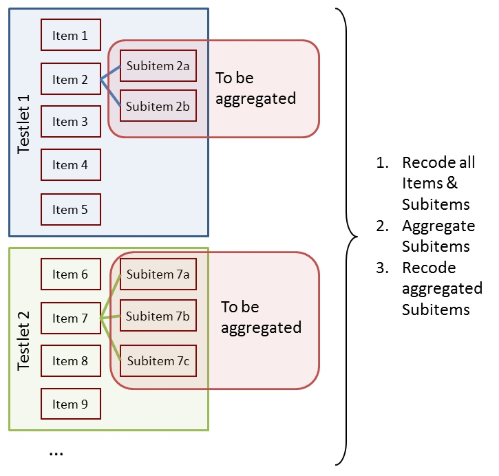
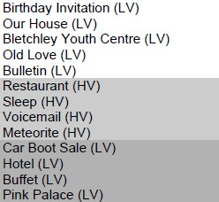
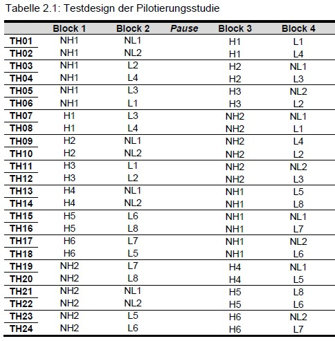
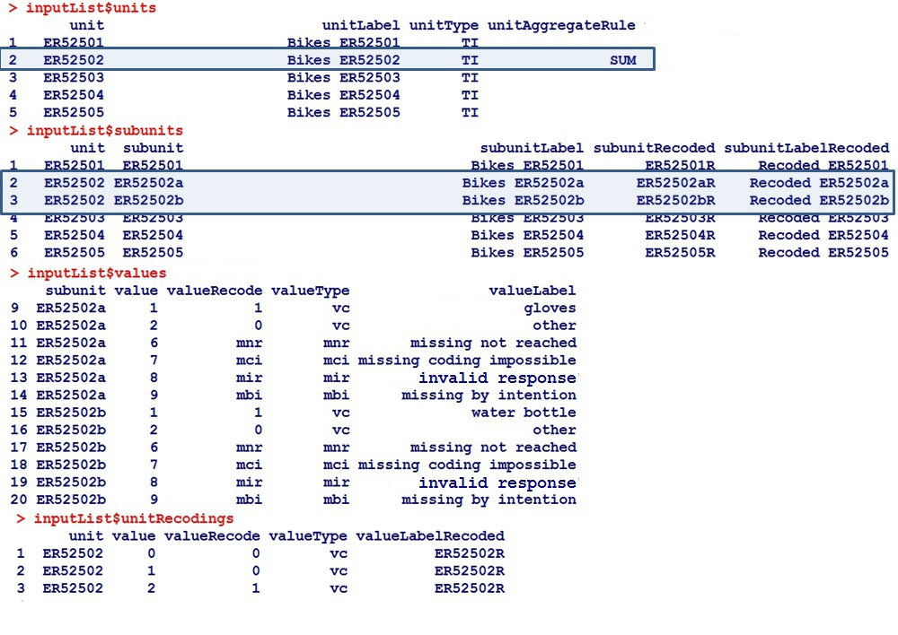
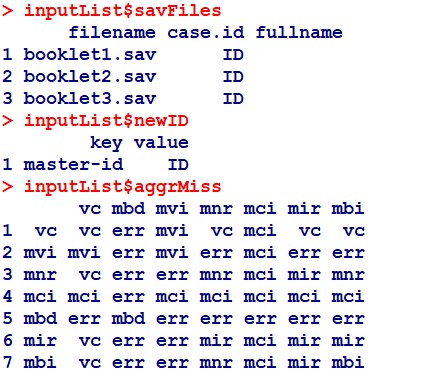
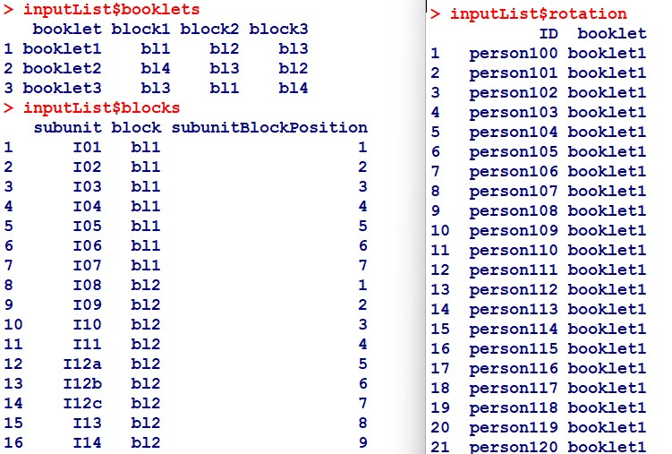

IQB-internes R-Paket zur Aufbereitung von “Papier”-Kompetenzdaten
2024-11-19
Das Paket eatPrep
Datenstrukturen
…von “Papier-Kompetenzdaten” am IQB
Repräsentation dieser Strukturen in eatPrep
Praktisch angewendet
[Übung 1]
[Übung 2]
Papier-Tests
Schülerinnen und Schüler…
Die Ergebnisse werden später zentral gesammelt.
1a. eatPrep: Fokus
Aufbereitung der Kompetenzdaten
Die ausgefüllten Bögen werden
Ansatzpunkt für eatPrep: Standardisierung und Automatisierung des Umgangs mit solchen Daten, die vom Subkontraktor zumeist im SPSS- (.sav) Format übergeben werden.
1a. eatPrep: Fokus
1a. eatPrep: Fokus
1b. eatPrep: Features
…installiert werden. eatPrep kann anschließend mit folgenden Befehlszeilen installiert und geladen werden:
1c. eatPrep: Installation

2a. Strukturen von Papier-Kompetenzdaten am IQB
2a. Strukturen von Papier-Kompetenzdaten am IQB
2a. Subitems in Items in Aufgaben
| Code | Abbr | Label | Explanation |
|---|---|---|---|
| -98 | mir | missing invalid response | (1) Item was edited, and (2a) empty answer or (2b) invalid (joke) answer. |
| -99 | mbo/mbi | missing by omission/intention | Item wasn’t edited but seen, or wasn’t seen, but there are seen or edited subsequent Items. |
| -96 | mnr | missing not reached | (1) Item wasn’t seen, and (2) all subsequent Items weren’t seen, either. |
| -97 | mci | missing coding impossible | (1) Item should/could have been edited, and (2) answer can’t be analysed due to technical problems. |
| -94 | mbd | missing by design | no answer, because Item wasn’t shown to the testperson by design. |
2a. Subitems in Items in Aufgaben
 
2a. Strukturen von Papier-Kompetenzdaten am IQB
Testhefte (booklets): bestehen aus Blöcken
Blöcke (blocks/cluster): bestehen aus Aufgaben
Aufgaben (tasks): beinhalten Items (i.d.R. zu einem gemeinsamen Stimulus/testlet)
Items (units): oft die am Ende interessierende Analyseeinheit
Subitems (subunits): werden zu Items aggregiert
Werte (values): Ausprägungen, die eine Person auf einem (Sub-)Item annehmen kann
Scores (valueRecodes): Eine Abbildung der ursprünglichen Werte (Values) auf eine kleinere Anzahl von Kategorien (i.d.R. mindestens Richtig/Falsch/Fehlend, also 1/0/NA), die besser für eine IRT-Skalierung geeignet sind
2a. Strukturen von Papier-Kompetenzdaten am IQB
Wie werden Testhefte, Blöcke, Aufgaben, Items, Subitems, Werte und Scores in eatPrep hinterlegt?
analog einfacher relationaler Meta-Daten-Datenbank: eine Liste aus mehreren data.frames mit prädefinierter Struktur und festen Namen
wir brauchen Meta-Daten über die Items
2b. Metadaten-Struktur in eatPrep

2b. Metadaten-Struktur in eatPrep

2b. Metadaten-Struktur in eatPrep

2b. Metadaten-Struktur in eatPrep
readDaemonXlsx() - einlesen der inputListe, die mithilfe des EDV-Tools “ZKDaemon” erzeugt wurde.
(Dieses liegt unter i:\EDV\IQB-Apps\ZKDaemon\ZKDaemon.application. Eine ausführlichere, via Screenshots geführte Anleitung zur Bedienung des ZKDaemon findet sich hier:
i:\Methoden\02_IQB-interne_eat_Workshops\eatPrep_2021\eatPrep_2021-06-18.pdf)
readSpss() - einlesen von SPSS-Dateien.
readMerkmalXlsx() - einlesen von zusätzlichen Item- und Aufgabenmerkmalen wie Bearbeitungszeiten, Formaten, inhaltlichen Kategorien, …
(Erzeugen der Merkmal-Xlsx via Klick auf “Merkmalsauszug” in i:\EDV\IQB-Apps\IQB-ItemDB\IQB-ItemDB.application)
3a. Praxis: Haupt-Funktionen in eatPrep
Item Meta-Daten:
filename <- system.file("extdata", "inputList.xlsx", package = "eatPrep")
inpustList <- readDaemonXlsx(filename)
str(inpustList)
> List of 9
> $ units :'data.frame': 29 obs. of 6 variables:
> ..$ unit : chr [1:29] "I01" "I02" "I03" "I04" ...
> ..$ unitLabel : chr [1:29] "Animals: Weight of a duck" "Animals: Weight of a horse" "Animals: Weight of a mouse" "Animals: Weight of a cat" ...
> ..$ unitDescription : chr [1:29] NA NA NA NA ...
> ..$ unitType : chr [1:29] "TI" "TI" "TI" "TI" ...
> ..$ unitAggregateRule: chr [1:29] NA NA NA NA ...
> ..$ unitScoreRule : chr [1:29] NA NA NA NA ...
> $ subunits :'data.frame': 30 obs. of 9 variables:
> ..$ unit : chr [1:30] "I01" "I02" "I03" "I04" ...
> ..$ subunit : chr [1:30] "I01" "I02" "I03" "I04" ...
> ..$ subunitType : chr [1:30] "1" "1" "1" "1" ...
> ..$ subunitLabel : chr [1:30] "Animals: Weight of a duck" "Animals: Weight of a horse" "Animals: Weight of a mouse" "Animals: Weight of a cat" ...
> ..$ subunitDescription : chr [1:30] NA NA NA NA ...
> ..$ subunitPosition : chr [1:30] "a)" "b)" "c)" "d)" ...
> ..$ subunitTransniveau : chr [1:30] NA NA NA NA ...
> ..$ subunitRecoded : chr [1:30] "I01R" "I02R" "I03R" "I04R" ...
> ..$ subunitLabelRecoded: chr [1:30] "Recoded Animals: Weight of a duck" "Recoded Animals: Weight of a horse" "Recoded Animals: Weight of a mouse" "Recoded Animals: Weight of a cat" ...
> $ values :'data.frame': 220 obs. of 8 variables:
> ..$ subunit : chr [1:220] "I01" "I01" "I01" "I01" ...
> ..$ value : chr [1:220] "1" "2" "3" "6" ...
> ..$ valueRecode : chr [1:220] "0" "0" "1" "mnr" ...
> ..$ valueType : chr [1:220] "vc" "vc" "vc" "mnr" ...
> ..$ valueLabel : chr [1:220] "Response option 1 marked" "Response option 2 marked" "Response option 3 marked" "missing not reached" ...
> ..$ valueDescription : chr [1:220] "Response option 1 marked" "Response option 2 marked" "Response option 3 marked" "missing not reached" ...
> ..$ valueLabelRecoded : chr [1:220] "0" "0" "1" "mnr" ...
> ..$ valueDescriptionRecoded: chr [1:220] NA NA NA NA ...
> $ unitRecodings:'data.frame': 7 obs. of 7 variables:
> ..$ unit : chr [1:7] "I12" "I12" "I12" "I12" ...
> ..$ value : chr [1:7] "0" "1" "2" "3" ...
> ..$ valueRecode : chr [1:7] "0" "0" "0" "1" ...
> ..$ valueType : chr [1:7] "vc" "vc" "vc" "vc" ...
> ..$ valueLabel : chr [1:7] NA NA NA NA ...
> ..$ valueDescription : chr [1:7] NA NA NA NA ...
> ..$ valueLabelRecoded: chr [1:7] NA NA NA NA ...
> $ savFiles :'data.frame': 3 obs. of 3 variables:
> ..$ filename: chr [1:3] "booklet1.sav" "booklet2.sav" "booklet3.sav"
> ..$ case.id : chr [1:3] "ID" "ID" "ID"
> ..$ fullname: chr [1:3] NA NA NA
> $ newID :'data.frame': 1 obs. of 2 variables:
> ..$ key : chr "master-id"
> ..$ value: chr "ID"
> $ aggrMiss :'data.frame': 7 obs. of 8 variables:
> ..$ nam: chr [1:7] "vc" "mvi" "mnr" "mci" ...
> ..$ vc : chr [1:7] "vc" "mvi" "vc" "mci" ...
> ..$ mvi: chr [1:7] "mvi" "mvi" "err" "mci" ...
> ..$ mnr: chr [1:7] "vc" "err" "mnr" "mci" ...
> ..$ mci: chr [1:7] "mci" "mci" "mci" "mci" ...
> ..$ mbd: chr [1:7] "err" "err" "err" "err" ...
> ..$ mir: chr [1:7] "vc" "err" "mir" "mci" ...
> ..$ mbi: chr [1:7] "vc" "err" "mnr" "mci" ...
> $ booklets :'data.frame': 3 obs. of 4 variables:
> ..$ booklet: chr [1:3] "booklet1" "booklet2" "booklet3"
> ..$ block1 : chr [1:3] "bl1" "bl4" "bl3"
> ..$ block2 : chr [1:3] "bl2" "bl3" "bl1"
> ..$ block3 : chr [1:3] "bl3" "bl2" "bl4"
> $ blocks :'data.frame': 30 obs. of 3 variables:
> ..$ subunit : chr [1:30] "I01" "I02" "I03" "I04" ...
> ..$ block : chr [1:30] "bl1" "bl1" "bl1" "bl1" ...
> ..$ subunitBlockPosition: chr [1:30] "1" "2" "3" "4" ...3a. Praxis: Haupt-Funktionen in eatPrep
Exemplarisch ein Datensatz:
filename <- system.file("extdata", "booklet1.sav", package = "eatPrep")
booklet1 <- readSpss(filename)
head(booklet1)
> ID hisei I01 I02 I03 I04 I05 I06 I07 I08 I09 I10 I11 I12a I12b I12c
> 1 person002 57 3 4 2 3 1 1 1 1 3 2 3 0 1 4
> 2 person003 32 3 4 2 3 0 0 1 1 2 2 1 0 0 4
> 3 person004 59 3 4 2 3 0 0 1 1 4 4 3 0 0 4
> 4 person005 56 3 1 2 2 1 1 2 1 4 4 9 0 1 4
> 5 person006 55 3 4 2 2 0 0 1 1 2 2 2 0 1 4
> 6 person007 47 1 4 2 3 0 0 1 1 2 3 1 0 0 4
> I13 I14 I15 I16 I17 I18 I19 I20 I21 I22 I23 I24 I25 I26 I27 I28
> 1 2 6 <NA> <NA> <NA> <NA> <NA> <NA> <NA> <NA> <NA> <NA> <NA> <NA> <NA> <NA>
> 2 2 6 <NA> <NA> <NA> <NA> <NA> <NA> <NA> <NA> <NA> <NA> <NA> <NA> <NA> <NA>
> 3 2 6 <NA> <NA> <NA> <NA> <NA> <NA> <NA> <NA> <NA> <NA> <NA> <NA> <NA> <NA>
> 4 2 6 <NA> <NA> <NA> <NA> <NA> <NA> <NA> <NA> <NA> <NA> <NA> <NA> <NA> <NA>
> 5 2 6 <NA> <NA> <NA> <NA> <NA> <NA> <NA> <NA> <NA> <NA> <NA> <NA> <NA> <NA>
> 6 2 6 <NA> <NA> <NA> <NA> <NA> <NA> <NA> <NA> <NA> <NA> <NA> <NA> <NA> <NA>3a. Praxis: Haupt-Funktionen in eatPrep
Weitere Merkmale:
filename <- system.file("extdata", "itemmerkmale.xlsx", package = "eatPrep")
merkmale <- readMerkmalXlsx(filename, tolcl = FALSE, alleM = TRUE)
head(merkmale)
> $Aufgabenmerkmale
> Aufgabe Zeit.A AufgID AufgTitel
> 1 Animals: Weight of a duck 0:00 Animals: Weight of a duck NA
> 2 Animals: Weight of a horse 0:00 Animals: Weight of a horse NA
>
> $Itemmerkmale
> Aufgabe Teilaufgabe Item Zeit.I Anforderungsbereich.MaP
> 1 Animals: Weight of a duck A 01 0:00 I
> 2 Animals: Weight of a horse A 01 0:00 I
> 3 Animals: Weight of a horse B 02 0:00 II
> Bildungsstandards.MaP.allgemeine Itemtyp.5er
> 1 1a GA - Geschlossen Ankreuzen
> 2 <NA> GA - Geschlossen Ankreuzen
> 3 <NA> GA - Geschlossen Ankreuzen
> AufgID AufgTitel ItemID
> 1 Animals: Weight of a duck NA Animals: Weight of a duck01
> 2 Animals: Weight of a horse NA Animals: Weight of a horse01
> 3 Animals: Weight of a horse NA Animals: Weight of a horse02
>
> $AlleMerkmale
> AufgID Aufgabe Teilaufgabe Item
> 1 Animals: Weight of a duck Animals: Weight of a duck A 01
> 2 Animals: Weight of a horse Animals: Weight of a horse A 01
> 3 Animals: Weight of a horse Animals: Weight of a horse B 02
> ItemID Zeit.I Anforderungsbereich.MaP
> 1 Animals: Weight of a duck01 0:00 I
> 2 Animals: Weight of a horse01 0:00 I
> 3 Animals: Weight of a horse02 0:00 II
> Bildungsstandards.MaP.allgemeine Itemtyp.5er Zeit.A
> 1 1a GA - Geschlossen Ankreuzen 0:00
> 2 <NA> GA - Geschlossen Ankreuzen 0:00
> 3 <NA> GA - Geschlossen Ankreuzen 0:003a. Praxis: Haupt-Funktionen in eatPrep
checkInputList() - eingelesene inputListe auf interne Konsistenz prüfen
checkData() - Datensätze gemäß Item-Meta-Informationen überprüfen und sonstige Plausibilitätsprüfungen der Daten
checkDesign() - Datensätze gemäß Meta-Informationen zum Testdesign überprüfen
3a. Praxis: Haupt-Funktionen in eatPrep
inputListe checken:
checkInputList(inputList)
>
> ── Checking sheets
>
> ── Check: Value Recoding
> ✔ Missing types `mir` and `mbi` are defined for all items in valueRecode.
> ✖ Missing type `mnr` is not defined as valueRecode for items: `I14`.
> ✖ Missing type `mbd` is not defined as valueRecode for items: `I14`.
> ℹ value contains the following values over all items: `0`, `1`, `2`, `3`, `4`,
> `5`, `6`, `7`, `8`, and `9`
> ✔ valueRecode contains only 0, 1, and the mistypes: `0`, `1`, `mbd`, `mbi`,
> `mir`, and `mnr`
>
> ── Check: Value Types
> ✔ No other values than `vc` and the mistypes in valueType.
>
> ── Check: Unit Equivalence
> ✔ All 28 units in units sheet are also defined in subunits.
>
> ── Check: Subunit Equivalence
> ✔ All 30 subunits in subunits sheet are also defined in values.
>
> ── Check: Unit Recoding
> ℹ Units with only one subunit: 27
> ℹ Units with more than one subunit: 1 (`I12`)
> ✔ All units with more than one subunit are defined in unitRecodings sheet.
> [1] FALSE3a. Praxis: Haupt-Funktionen in eatPrep
mergeData() - zusammenführen der Datensätze und Diagnostik zu Passung
recodeData() - rekodieren der Subitems gemäß Meta-Informationen aus der inputListe
aggregateData() - Subitems zu Items aggregieren
scoreData() - ehemals aus Subitems bestehende Items rekodieren
mnrCoding() - rekodieren der letzten Items (falls leer) in jedem Block (siehe Testdesign) als “missing not reached”
3a. Praxis: Haupt-Funktionen in eatPrep
automateDataPreparation()# Vorbereitung, da die Pfade für die SPSS-Dateien hier noch nicht in der InputListe eingetragen sind
inputList$savFiles$fullname[1] <- system.file("extdata", "booklet1.sav", package = "eatPrep")
inputList$savFiles$fullname[2] <- system.file("extdata", "booklet2.sav", package = "eatPrep")
inputList$savFiles$fullname[3] <- system.file("extdata", "booklet3.sav", package = "eatPrep")
preparedData <- automateDataPreparation(inputList = inputList,
readSpss = TRUE, checkData = TRUE, mergeData = TRUE,
recodeData = TRUE, aggregateData = TRUE, scoreData = TRUE,
recodeMnr = TRUE, breaks=c(1,2,3), writeSpss = FALSE, verbose = TRUE)
> Starting automateDataPreparation 2025-03-07 14:29:15.474056
>
> Load .sav-files.
> Successfully read in: booklet1.sav, booklet2.sav, booklet3.sav
>
> Check data...
>
> Checking dataset booklet1.sav
> Only valid codes in ID variable.
> No duplicated entries in ID variable.
> No duplicated variable names.
> Found no variable information about variable(s) hisei. This/These variables will not be checked for missings and invalid codes.
> Variable(s) I24, I25 contain(s) only missing values.
> Found no invalid codes.
>
> Checking dataset booklet2.sav
> Only valid codes in ID variable.
> No duplicated entries in ID variable.
> No duplicated variable names.
> Found no variable information about variable(s) hisei. This/These variables will not be checked for missings and invalid codes.
> Found no invalid codes.
>
> Checking dataset booklet3.sav
> Only valid codes in ID variable.
> No duplicated entries in ID variable.
> No duplicated variable names.
> Found no variable information about variable(s) hisei. This/These variables will not be checked for missings and invalid codes.
> Found no invalid codes.
>
> Start merging.
> Start merging of dataset 1.
> Start merging of dataset 2.
> Start merging of dataset 3.
>
> Start recoding.
>
> Found no recode information for variable(s):
> ID, hisei.
> This/These variable(s) will not be recoded.
>
> Variables... I01, I02, I03, I04, I05, I06, I07, I08, I09, I10, I11, I12a, I12b, I12c, I13, I14, I15, I16, I17, I18, I19, I20, I21, I22, I23, I24, I25, I26, I27, I28
> ...have been recoded.
>
> Start recoding Mbi to Mnr.
> ...identifying items in data (reference is blocks$subunit)
> Variables in data not recognized as items:
> ID, booklet, hisei
> If some of these excluded variables should have been identified as items (and thus be used for mnr coding) check 'blocks', 'subunits', 'dat'.
> ...identifying items with no mbi-codes ('mbi'):
> I04R, I07R
> If you expect mbi-codes on these variables check your data and option 'mbiCode'
> no mnr identified for any case. nothing recoded.
>
> Start aggregating
> Since inputList$aggrMiss exists, this will be used instead of default.
> All aggregation rules will be defaulted to 'SUM', because no other type is currently supported.
> Found 27 unit(s) with only one subunit in 'dat'. This/these subunit(s) will not be aggregated and renamed to their respective unit name(s).
> 1 units were aggregated: I12.
>
> Start scoring.
> ✔ 1 unit was scored: `I12`.
>
> No SPSS-File has been written.
>
> Missings are UNcollapsed.
> automateDataPreparation terminated successfully! 2025-03-07 14:29:15.830208(automateDataPreparation() arbeitetet alternativ auch mit Daten, die als einzelner (ggf. bereits zusammengeführter) R-data.frame übergeben werden (via Argument “datList”))
3a. Praxis: Haupt-Funktionen in eatPrep
automateDataPreparation()…arbeitetet auch mit Daten, die als Liste von R-data.frames übergeben werden (Argument datList):
# Einbauen von Problem in Daten zur Illustration der Diagnostik von mergeData()
inputDat[[3]]$ID[1] <- inputDat[[2]]$ID[1]
preparedData <- automateDataPreparation(datList = inputDat, inputList = inputList,
readSpss = FALSE, checkData = TRUE, mergeData = TRUE,
recodeData = TRUE, aggregateData = TRUE, scoreData = TRUE,
recodeMnr = TRUE, breaks=c(1,2,3), writeSpss = FALSE, verbose = TRUE)
> Starting automateDataPreparation 2025-03-07 14:29:15.848982
>
> Check data...
>
> Checking dataset booklet1
> Only valid codes in ID variable.
> No duplicated entries in ID variable.
> No duplicated variable names.
> Found no variable information about variable(s) hisei. This/These variables will not be checked for missings and invalid codes.
> Found no invalid codes.
>
> Checking dataset booklet2
> Only valid codes in ID variable.
> No duplicated entries in ID variable.
> No duplicated variable names.
> Found no variable information about variable(s) hisei. This/These variables will not be checked for missings and invalid codes.
> Found no invalid codes.
>
> Checking dataset booklet3
> Only valid codes in ID variable.
> No duplicated entries in ID variable.
> No duplicated variable names.
> Found no variable information about variable(s) hisei. This/These variables will not be checked for missings and invalid codes.
> Found no invalid codes.
>
> Start merging.
> Start merging of dataset 1.
> Start merging of dataset 2.
> Start merging of dataset 3.
> Multiple different valid codes in variable: 'hisei' in 'dataset 3':
> The first value has been kept.
> IDs: person200
> Values: 69&49
> Multiple different valid codes in variable: 'I15' in 'dataset 3':
> The first value has been kept.
> IDs: person200
> Values: 4&3
> Multiple different valid codes in variable: 'I16' in 'dataset 3':
> The first value has been kept.
> IDs: person200
> Values: 4&1
> Multiple different valid codes in variable: 'I18' in 'dataset 3':
> The first value has been kept.
> IDs: person200
> Values: 1&4
> Multiple different valid codes in variable: 'I20' in 'dataset 3':
> The first value has been kept.
> IDs: person200
> Values: 4&3
> Multiple different valid codes in variable: 'I21' in 'dataset 3':
> The first value has been kept.
> IDs: person200
> Values: 2&3
> Multiple different valid codes in variable: 'I22' in 'dataset 3':
> The first value has been kept.
> IDs: person200
> Values: 1&3
> Multiple different valid codes in variable: 'I23' in 'dataset 3':
> The first value has been kept.
> IDs: person200
> Values: 9&3
> Multiple different valid codes in variable: 'I25' in 'dataset 3':
> The first value has been kept.
> IDs: person200
> Values: 1&0
> Multiple different valid codes in variable: 'I26' in 'dataset 3':
> The first value has been kept.
> IDs: person200
> Values: 9&1
> Multiple different valid codes in variable: 'I28' in 'dataset 3':
> The first value has been kept.
> IDs: person200
> Values: 1&0
> Start adding mbd according to data pattern.
>
> Start recoding.
>
> Found no recode information for variable(s):
> ID, hisei.
> This/These variable(s) will not be recoded.
>
> Variables... I01, I02, I03, I04, I05, I06, I07, I08, I09, I10, I11, I12a, I12b, I12c, I13, I14, I15, I16, I17, I18, I19, I20, I21, I22, I23, I24, I25, I26, I27, I28
> ...have been recoded.
>
> Start recoding Mbi to Mnr.
> ...identifying items in data (reference is blocks$subunit)
> Variables in data not recognized as items:
> ID, booklet, hisei
> If some of these excluded variables should have been identified as items (and thus be used for mnr coding) check 'blocks', 'subunits', 'dat'.
> ...identifying items with no mbi-codes ('mbi'):
> I04R, I08R
> If you expect mbi-codes on these variables check your data and option 'mbiCode'
> mnr statistics:
> mnr cells: 553
> unique cases with at least one mnr code: 89
> unique items with at least one mnr code: 16
> unique cases ('ID') per booklet and booklet section (0s omitted):
> booklet booklet.section N.ID
> 1 booklet1 2 11
> 2 booklet1 3 28
> 3 booklet2 1 28
> 4 booklet2 2 11
> 5 booklet2 3 1
> 6 booklet3 3 31
> start recoding (item-wise)
> done
> elapsed time: 0.1 secs
>
> Start aggregating
> Since inputList$aggrMiss exists, this will be used instead of default.
> All aggregation rules will be defaulted to 'SUM', because no other type is currently supported.
> Found 27 unit(s) with only one subunit in 'dat'. This/these subunit(s) will not be aggregated and renamed to their respective unit name(s).
> 1 units were aggregated: I12.
>
> Start scoring.
> ✔ 1 unit was scored: `I12`.
>
> No SPSS-File has been written.
>
> Missings are UNcollapsed.
> automateDataPreparation terminated successfully! 2025-03-07 14:29:16.1028253a. Praxis: Haupt-Funktionen in eatPrep
checkDesign(dat = prepDat, booklets = inputList$booklets, blocks = inputList$blocks,
rotation = inputList$rotation, subunits = inputList$subunits,
sysMis = "mbd", id="ID", verbose = TRUE)
>
> ── Check: Subunit recoding
> ℹ Use names for recoded subunits.
>
> ── Check: Variables in the dataset
> ℹ The following 1 variable is not in info (`subunit` in blocks) but in dataset.
> It will be ignored during check: `hisei`
>
> ── Check: Valid and missing codes
> ℹ Deviations from design detected!
> ✖ Found for 7 subunits valid codes instead of sysMis for booklet `booklet2`:
> I01R, I02R, I03R, I04R, I05R, I06R, and I07R
> ℹ I01R, I02R, I03R, I04R, I05R, I06R, I07R (1 cases): person2003a. Praxis: Haupt-Funktionen in eatPrep
collapseMissings() - rekodiert die Missingtypen in prädefinierte Scores (i.d.R. 0,1,NA). Ein solcher “collapster” R-data.frame kann direkt nach eatModel zur Skalierung übergeben werden.
writeSpss() - produziert eine SPSS-Syntax und einen .txt-Datensatz, der mit der Syntax in SPSS inklusive aller Meta-Daten eingelesen werden kann.
prep2GADS() - sowohl die Roh-Datensätze als auch die fertigen, gescorten Datensätze können inklusive aller ihrer Meta-Daten in ein GADSdat-Objekt exportiert werden, zur Datenaufbewahrung oder Weiterverarbeitung in eatGADS.
Lest die Meta-Daten (inputListe) und Daten (booklet1.sav, booklet2.sav, booklet3.sav) ein und lasst diese automatisiert prüfen. Bereitet die Daten bis zum gescorten Zustand weiter auf.
Überprüft, ob die Daten zum Testdesign passen oder ob es Dateneinträge gibt, wo per Design fehlende Werte sein müssten oder per Design fehlende Werte, wo es valide Codes oder andere Missingtypen geben müsste.
Exportiert die aufbereiteten (aber “uncollapsten”) Daten ins eatGADS-Format.
3a. Praxis: Haupt-Funktionen in eatPrep – Übung 1
Ein essenzielles diagnostisches Tool sind die Kategorientrennschärfen. Diese geben wichtige Hinweise auf falsch zugewiesene Scores, fälschlicherweise richtige Distraktoren und falsche Attraktoren.
catPbc() - berechnet die Kategorientrennschärfen.
evalPbc() - findet und markiert Auffälligkeiten in Lösungshäufigkeiten und Kategorientrennschärfen (nach anpassbaren Kriterien) und berichtet diese.
3b. Praxis: Zusatz-Funktionen in eatPrep
datRaw <- automateDataPreparation(datList = inputDat, inputList = inputList,
readSpss = FALSE, checkData = FALSE, mergeData = TRUE,
recodeData = FALSE, aggregateData = FALSE, scoreData = FALSE,
writeSpss = FALSE, verbose = FALSE)
datRec <- automateDataPreparation(datList = inputDat, inputList = inputList,
readSpss = FALSE, checkData = FALSE, mergeData = TRUE,
recodeData = TRUE, aggregateData = FALSE, scoreData = FALSE,
writeSpss = FALSE, verbose = FALSE)
pbcs <- catPbc(datRaw, datRec, idRaw = "ID", idRec = "ID",
context.vars = "hisei", values = inputList$values,
subunits = inputList$subunits)
pbcs
> item cat n freq freq.rel catPbc recodevalue subunitType
> 1 I01 1 200 27 0.13500000 -0.063232955 0 1
> 2 I01 2 200 84 0.42000000 -0.343664917 0 1
> 3 I01 3 200 35 0.17500000 0.155770249 1 1
> 4 I01 8 200 48 0.24000000 0.266128316 mir 1
> 5 I01 9 200 6 0.03000000 0.107748105 mbi 1
> 6 I02 1 200 19 0.09500000 0.132177188 1 1
> 7 I02 2 200 20 0.10000000 -0.051926292 0 1
> 8 I02 3 200 79 0.39500000 -0.205996229 0 1
> 9 I02 4 200 80 0.40000000 0.127329573 0 1
> 10 I02 9 200 2 0.01000000 0.152207590 mbi 1
> 11 I03 1 200 40 0.20000000 -0.160857919 0 1
> 12 I03 2 200 27 0.13500000 0.237117930 1 1
> 13 I03 3 200 83 0.41500000 -0.289819086 0 1
> 14 I03 8 200 49 0.24500000 0.289329609 mir 1
> 15 I03 9 200 1 0.00500000 0.023785359 mbi 1
> 16 I04 1 200 75 0.37500000 -0.387652382 0 1
> 17 I04 2 200 87 0.43500000 0.415424524 1 1
> 18 I04 3 200 38 0.19000000 -0.046592327 0 1
> 19 I05 0 200 84 0.42000000 -0.160533926 0 3
> 20 I05 1 200 71 0.35500000 0.268786591 1 3
> 21 I05 9 200 45 0.22500000 -0.118264295 mbi 3
> 22 I06 0 200 64 0.32000000 -0.057353034 0 3
> 23 I06 1 200 66 0.33000000 0.355146259 1 3
> 24 I06 9 200 70 0.35000000 -0.294023906 mbi 3
> 25 I07 1 200 19 0.09500000 0.181585888 1 1
> 26 I07 2 200 39 0.19500000 -0.048018612 0 1
> 27 I07 3 200 73 0.36500000 0.251073049 0 1
> 28 I07 4 200 16 0.08000000 0.028825332 0 1
> 29 I07 8 200 51 0.25500000 -0.379667500 mir 1
> 30 I07 9 200 2 0.01000000 0.025823402 mbi 1
> 31 I08 0 200 95 0.47500000 -0.252225049 0 3
> 32 I08 1 200 105 0.52500000 0.252225049 1 3
> 33 I09 1 200 47 0.23500000 -0.074215726 0 1
> 34 I09 2 200 51 0.25500000 -0.108418730 0 1
> 35 I09 3 200 42 0.21000000 -0.093964942 0 1
> 36 I09 4 200 57 0.28500000 0.270623274 1 1
> 37 I09 9 200 3 0.01500000 -0.042513823 mbi 1
> 38 I10 1 200 50 0.25000000 -0.104673710 0 1
> 39 I10 2 200 52 0.26000000 0.301910231 1 1
> 40 I10 3 200 48 0.24000000 -0.109540598 0 1
> 41 I10 4 200 48 0.24000000 -0.089923339 0 1
> 42 I10 9 200 2 0.01000000 -0.019250867 mbi 1
> 43 I11 1 200 51 0.25500000 -0.057103471 0 1
> 44 I11 2 200 56 0.28000000 -0.085129296 0 1
> 45 I11 3 200 42 0.21000000 0.289059924 1 1
> 46 I11 4 200 47 0.23500000 -0.098430636 0 1
> 47 I11 9 200 4 0.02000000 -0.092070476 mbi 1
> 48 I12a 0 200 81 0.40500000 -0.377460800 0 3
> 49 I12a 1 200 115 0.57500000 0.360817945 1 3
> 50 I12a 9 200 4 0.02000000 0.049461993 mbi 3
> 51 I12b 0 200 97 0.48500000 -0.175548250 0 3
> 52 I12b 1 200 96 0.48000000 0.183183281 1 3
> 53 I12b 9 200 7 0.03500000 -0.020588340 mbi 3
> 54 I12c 1 200 22 0.11000000 -0.002560038 0 1
> 55 I12c 2 200 34 0.17000000 0.002990612 0 1
> 56 I12c 3 200 22 0.11000000 0.026479006 0 1
> 57 I12c 4 200 118 0.59000000 0.002977254 1 1
> 58 I12c 9 200 4 0.02000000 -0.071940609 mbi 1
> 59 I13 1 200 33 0.16500000 -0.027874396 0 1
> 60 I13 2 200 38 0.19000000 0.191722148 1 1
> 61 I13 3 200 25 0.12500000 -0.113940947 0 1
> 62 I13 4 200 92 0.46000000 0.007694984 0 1
> 63 I13 9 200 12 0.06000000 -0.130613859 mbi 1
> 64 I14 1 200 25 0.12500000 -0.055947188 0 1
> 65 I14 2 200 23 0.11500000 -0.055042918 0 1
> 66 I14 3 200 69 0.34500000 -0.005842116 0 1
> 67 I14 4 200 24 0.12000000 0.065389131 0 1
> 68 I14 5 200 23 0.11500000 0.038993154 0 1
> 69 I14 6 200 0 0.00000000 NA 1 1
> 70 I14 7 200 0 0.00000000 NA 0 1
> 71 I14 9 200 36 0.18000000 0.013408102 mbi 1
> 72 I15 1 299 60 0.20066890 0.148165571 1 1
> 73 I15 2 299 34 0.11371237 -0.031673606 0 1
> 74 I15 3 299 99 0.33110368 0.040042720 0 1
> 75 I15 4 299 46 0.15384615 -0.039930537 0 1
> 76 I15 9 299 60 0.20066890 -0.134139071 mbi 1
> 77 I16 1 299 41 0.13712375 -0.140413534 0 1
> 78 I16 2 299 42 0.14046823 -0.069670830 0 1
> 79 I16 3 299 87 0.29096990 -0.110210224 0 1
> 80 I16 4 299 48 0.16053512 0.138153062 1 1
> 81 I16 8 299 50 0.16722408 0.077959773 mir 1
> 82 I16 9 299 31 0.10367893 0.140260350 mbi 1
> 83 I17 1 299 55 0.18394649 0.056927815 0 1
> 84 I17 2 299 38 0.12709030 0.125919235 1 1
> 85 I17 3 299 88 0.29431438 0.034146364 0 1
> 86 I17 4 299 87 0.29096990 -0.283689189 0 1
> 87 I17 9 299 31 0.10367893 0.161709601 mbi 1
> 88 I18 1 299 44 0.14715719 0.107933501 1 1
> 89 I18 2 299 36 0.12040134 -0.049314330 0 1
> 90 I18 3 299 46 0.15384615 -0.072949177 0 1
> 91 I18 4 299 138 0.46153846 -0.113108105 0 1
> 92 I18 9 299 35 0.11705686 0.188244072 mbi 1
> 93 I19 1 299 50 0.16722408 -0.024898457 0 1
> 94 I19 2 299 40 0.13377926 -0.057560331 0 1
> 95 I19 3 299 41 0.13712375 -0.119477020 0 1
> 96 I19 4 299 39 0.13043478 0.157842457 1 1
> 97 I19 9 299 129 0.43143813 0.033970884 mbi 1
> 98 I20 1 299 25 0.08361204 -0.017281536 0 1
> 99 I20 2 299 98 0.32775920 0.211463845 1 1
> 100 I20 3 299 74 0.24749164 -0.336332944 0 1
> 101 I20 4 299 27 0.09030100 -0.031893614 0 1
> 102 I20 9 299 75 0.25083612 0.137972775 mbi 1
> 103 I21 1 299 35 0.11705686 -0.057356034 0 1
> 104 I21 2 299 99 0.33110368 -0.122486964 0 1
> 105 I21 3 299 38 0.12709030 0.129346339 1 1
> 106 I21 4 299 42 0.14046823 -0.097293263 0 1
> 107 I21 9 299 85 0.28428094 0.148108941 mbi 1
> 108 I22 1 199 21 0.10552764 0.203181896 1 1
> 109 I22 2 199 21 0.10552764 -0.102561126 0 1
> 110 I22 3 199 70 0.35175879 0.142451132 0 1
> 111 I22 4 199 65 0.32663317 -0.127297485 0 1
> 112 I22 9 199 22 0.11055276 -0.125126539 mbi 1
> 113 I23 1 199 66 0.33165829 0.062867843 1 1
> 114 I23 2 199 9 0.04522613 0.001841798 0 1
> 115 I23 3 199 24 0.12060302 -0.074686626 0 1
> 116 I23 4 199 26 0.13065327 -0.245502028 0 1
> 117 I23 9 199 74 0.37185930 0.159487857 mbi 1
> 118 I24 1 199 99 0.49748744 0.215084724 0 1
> 119 I24 2 199 18 0.09045226 -0.123842852 1 1
> 120 I24 3 199 24 0.12060302 -0.103496094 0 1
> 121 I24 4 199 19 0.09547739 -0.050262541 0 1
> 122 I24 9 199 39 0.19597990 -0.059310341 mbi 1
> 123 I25 0 199 39 0.19597990 -0.141672687 0 3
> 124 I25 1 199 102 0.51256281 0.273449060 1 3
> 125 I25 9 199 58 0.29145729 -0.177020237 mbi 3
> 126 I26 0 199 39 0.19597990 -0.163860787 0 3
> 127 I26 1 199 51 0.25628141 0.162189524 1 3
> 128 I26 9 199 109 0.54773869 -0.011579889 mbi 3
> 129 I27 0 199 54 0.27135678 -0.102379789 0 3
> 130 I27 1 199 42 0.21105528 0.238689431 1 3
> 131 I27 9 199 103 0.51758794 -0.103813945 mbi 3
> 132 I28 0 199 35 0.17587940 -0.107657030 0 3
> 133 I28 1 199 73 0.36683417 0.283901197 1 3
> 134 I28 8 199 31 0.15577889 -0.033997058 mir 3
> 135 I28 9 199 60 0.30150754 -0.181968752 mbi 33b. Praxis: Zusatz-Funktionen in eatPrep
epbcs <- evalPbc(pbcs)
> ✖ The attractors (score 1) of the following 1 item were chosen with a frequency
> of zero: I14. This should not happen. Please check.
> ! The distractors (score 0) of the following 1 item were chosen with a
> frequency of zero: I14_7. This may happen, but is probably not intended.
> ✖ catPbcs for attractors (score 1) of the following 3 items are worrisome low (< 0.05) or missing: I12c:_0, I14:_NA, and I24:_-0.12
> ✖ catPbcs for distractors (score 0) of the following 9 items are unexpectedly high (> 0.005): I02_4_0.13, I07_3_0.25, I07_4_0.03, I12c_3_0.03, I13_4_0.01, I14_4_0.07, I14_5_0.04, I15_3_0.04, I17_1_0.06, I17_3_0.03, I22_3_0.14, and I24_1_0.22
> ! catPbcs for mistype 'mir' of the following 3 items are relatively high (>
> 0.07): I01_8_0.27, I03_8_0.29, and I16_8_0.08
> ! catPbcs for mistype 'mbi' of the following 8 items are relatively high (>
> 0.07): I01_9_0.11, I02_9_0.15, I16_9_0.14, I17_9_0.16, I18_9_0.19, I20_9_0.14,
> I21_9_0.15, and I23_9_0.16
> ℹ For a list of problematic items, save the `output` of this function and
> return the item names as a vector:
> • `output$zeroFreqAtt`
> • `output$zeroFreqDis`
> • `output$lowMisPbcAtt`
> • `output$highPbcDis`
> • `output$highPbcMis$mir`
> • `output$highPbcMis$mbi`3b. Praxis: Zusatz-Funktionen in eatPrep
…werden oft außerhalb von eatPrep behandelt und Änderungen am Datensatz projektintern dokumentiert. Manchmal besteht jedoch das Bedürfnis, die von den Testleiter:innen geflaggten Teildaten visuell zu inspizieren, ggf. zu rekodieren und dieses zu dokumentieren.
visualSubsetRecode() - erlaubt dokumentiertes Ansehen (+ggf. Rekodieren) von einzelnen Testteilen für einzelne Personen oder ganze Testgruppen.
3b. Praxis: Zusatz-Funktionen in eatPrep
subsetInfoMax <- data.frame(
ID=c("person100", "person101", "person102", "person103",
"person104", "person105", "person106", "person107",
"person108", "person109", "person110"),
IDgroup=c(1,1,1,1,1,2,2,2,2,2,2),
datCols=c("I01", "I02", "I03", "I01", "I02", "I03",
"I04", "I05", "I02", "I03", "I04"),
comment=c(rep("Es gab Feueralarm",5),
rep("Der klassenraum musste gewechselt werden,
wir hatten keine Zeit mehr.",6)))
datVisRec <- visualSubsetRecode(dat=preparedData, subsetInfo=subsetInfoMax, ID="ID",
toRecodeVal="mci", useGroups="IDgroup")
>
> ── Begin visual Inspection 2025-03-07 14:29:16.76107 ───────────────────────────
>
> ── Display subset (1 of 2)
> → group 1
> → 5 cases: person100, person101, person102, person103, and person104
> → 3 variables: I01, I02, and I03
>
> subgroup 1 :
> ID I01 I02 I03
> 1 person100 0 0 0
> 2 person101 mbi 0 1
> 3 person102 1 0 1
> 4 person103 0 0 0
> 5 person104 1 0 0
>
> → Table of Values and NAs:
>
> 0 1 mbi
> 10 4 1
>
> ℹ Do you want to recode this subset to 'mci'?
> Error in menu(choices1): menu() cannot be used non-interactivelyIn Koderschulung und für Technischen Bericht benötigt:
meanAgree() - prozentuale Übereinstimmung
meanKappa() - Cohen’s Kappa für alle Beurteilerpaare eines Items, und Mittelung der Werte (gewichtet)
3b. Praxis: Zusatz-Funktionen in eatPrep
data(rater)
dat <- reshape2::dcast(subset(rater, variable == "V01"), id~rater, value.var = "value")
meanAgree(dat[,-1])
> $agree.pairwise
> Coder1 Coder2 N agree
> 1 Carol Dolores 50 0.98
> 2 Carol Edward 50 0.98
> 3 Carol John 50 0.98
> 4 Dolores Edward 50 0.96
> 5 Dolores John 50 1.00
> 6 Edward John 50 1.00
>
> $meanagree
> [1] 0.9833333
meanKappa(dat[,-1])
> $agree.pairwise
> Coder1 Coder2 N kappa
> 1 Carol Dolores 50 0.9690977
> 2 Carol Edward 50 0.9652053
> 3 Carol John 50 0.9651811
> 4 Dolores Edward 50 0.9402628
> 5 Dolores John 50 1.0000000
> 6 Edward John 50 1.0000000
>
> $meankappa
> [1] 0.97329113b. Praxis: Zusatz-Funktionen in eatPrep
Berechnet und evaluiert die Kategorientrennschärfen auf Basis der in Übung 1 eingelesenen und aufbereiteten SPSS-Daten (booklet1.sav, booklet2.sav, booklet3.sav).
Geht manuell das erste Beispiel der Testsitzungsprotokoll-Funktion visualSubsetRecode() durch.
Berechnet die Beurteilerübereinstimmung für die Variablen v02 und v03 aus dem Datensatz “rater”.
3b. Praxis: Zusatz-Funktionen in eatPrep
Bitte berichtet alle
eatPrep betreffend an karoline.sachse@iqb.hu-berlin.de